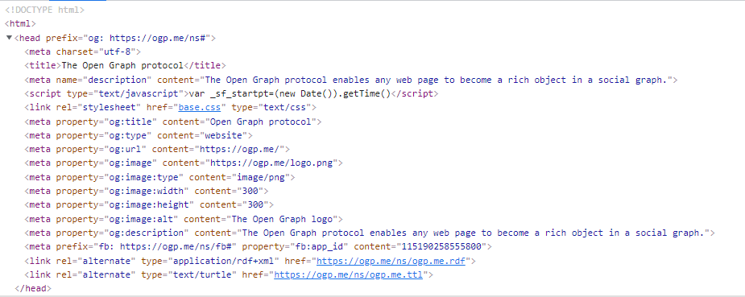

Books
Regression and Other Stories
Many textbooks on regression focus on theory and the simplest of examples. Real statistical problems, however, are complex and subtle. This is not a book about the theory of regression. It is a book about how to use regression to solve real problems of comparison, estimation, prediction, and causal inference. It focuses on practical issues such as sample size and missing data and a wide range of goals and techniques. It jumps right in to methods and computer code you can use fresh out of the box.
Andrew Gelman, Jennifer Hill, Aki Vehtari

R Markdown: The Definitive Guide
The first official book authored by the core R Markdown developers that provides a comprehensive and accurate reference to the R Markdown ecosystem. With R Markdown, you can easily create reproducible data analysis reports, presentations, dashboards, interactive applications, books, dissertations, websites, and journal articles, while enjoying the simplicity of Markdown and the great power of R and other languages.
Yihui Xie, J. J. Allaire, Garrett Grolemund

Efficient R programming
Efficient R Programming is about increasing the amount of work you can do with R in a given amount of time. It's about both computational and programmer efficiency.
Colin GillespieRobin Lovelace

Data Science in a Box
How can we effectively and efficiently teach data science to students with little to no background in computing and statistical thinking? How can we equip them with the skills and tools for reasoning with various types of data and leave them wanting to learn more? This introductory data science course is our (working) answer to this question.
Mine Çetinkaya-Rundel

Welcome | Geocomputation with R
Welcome | Geocomputation with R is for people who want to analyze, visualize and model geographic data with open source software. It is based on R, a statistical programming language that has powerful data processing, visualization, and geospatial capabilities. The book equips you with the knowledge and skills to tackle a wide range of issues manifested in geographic data, including those with scientific, societal, and environmental implications. This book will interest people from many backgrounds, especially Geographic Information Systems (GIS) users interested in applying their domain-specific knowledge in a powerful open source language for data science, and R users interested in extending their skills to handle spatial data.
Robin Lovelace, Jakub Nowosad, Jannes Muenchow

ggplot2: Elegant Graphics for Data Analysis
This is the on-line version of work-in-progress 3rd edition of ggplot2: elegant graphics for data analysis published by Springer. You can learn what s changed from the 2nd edition in the Preface. While this book gives some details on the basics of ggplot2, its primary focus is explaining the Grammar of Graphics that ggplot2 uses, and describing the full details. It is not a cookbook, and won t necessarily help you create any specific graphic that you need. But it will help you understand the details of the underlying theory, giving you the power to tailor any plot specifically to your needs.
Hadley Wickham, Danielle Navarro, and Thomas Lin Pedersen

Let's Git started | Happy Git and GitHub for the useR
Using Git and GitHub with R, Rstudio, and R Markdown
Jenny Bryan, the STAT 545 TAs, Jim Hester

Learning Statistics with R
R book and course by Danielle Navarro aimed at psychology students

Forecasting: Principles and Practice (2nd ed)
This textbook is intended to provide a comprehensive introduction to forecasting methods and to present enough information about each method for readers to be able to use them sensibly. We don t attempt to give a thorough discussion of the theoretical details behind each method, although the references at the end of each chapter will fill in many of those details.

R for Data Science
This book will teach you how to do data science with R: You ll learn how to get your data into R, get it into the most useful structure, transform it, visualise it and model it. In this book, you will find a practicum of skills for data science.
Hadley Wickham and Garrett Grolemund

Hands-On Programming with R
This book will teach you how to program in R, with hands-on examples. I wrote it for non-programmers to provide a friendly introduction to the R language. You'll learn how to load data, assemble and disassemble data objects, navigate R's environment system, write your own functions, and use all of R's programming tools. Throughout the book, you'll use your newfound skills to solve practical data science problems.
Garrett Grolemund


Guides
R Toolbox
This course is designed to give you an appreciation of R programming as a tool for data exploration. It focuses on packages that will help you do exploratory data analysis, visualisation and communication in a dynamic and reproducible manner.
Sister Analyst

Welcome! | Using R at Grattan Institute
How to use R at Grattan
Matt Cowgill, Will Mackey, and James Ha
What is RYouWithMe? | R-Ladies Sydney
A series of online modules designed by beginners for beginners. Learn about how the RYouWithMe program came about and how to get started.
RLadies Sydney
DATA SCIENCE WITH R
An introductory course by Danielle Navarro

STAT 545
STAT 545: Data wrangling, exploration, and analysis with R.
Jenny BryanThe STAT 545 TAs
TEACUPS, GIRAFFES, & STATISTICS
A delightful series of modules to learn statistics and R coding for students, scientists, and stats-enthusiasts.

Adventures in R
On this site, you will find materials for a full, 8-week, college-level course focused on learning to use R for Data Science and Statistical Analysis. This course was created by Dr. Kelly Bodwin. The materials shared here are free and open source, and may be shared and adapted under the Creative Commons license.
RStudio cheatsheets
RStudio cheatsheets
Tutorials
Learn tidytext with my new learnr course | Julia Silge
A data science blog

Blogs
Blog | Julia Silge
Machine learning, text analysis, and more
Blog
rOpenSci Blog

Home
Learn R, R tutorials, R resources, blog posts and the latest updates about the statistical programming R language.
R Weekly

R-bloggers
R news and tutorials contributed by hundreds of R bloggers

Videos

Data Wrangling R | RStudio Webinar - 2016
This is a recording of an RStudio webinar. You can subscribe to receive invitations to future webinars at https://www.rstudio.com/resources/web... . We try t...

Learning Tools
Library of Statistical Techniques (LOST)
LOST is a publicly-editable website with the goal of making it easy to execute statistical techniques in statistical software. Each page of the website contains a statistical technique which may be an estimation method, a data manipulation or cleaning method, a method for presenting or visualizing results, or any of the other kinds of things that statistical software typically does. For each of those techniques, the LOST page will contain code for performing that method in a variety of packages and languages. It may also contain information (or links) with thorough descriptions of the method, but the focus here is on implementation. How can you do it in your language of choice? If there are multiple ways, how are those ways different? Is the way you used to do it outdated, or does it do something unexpected? What's the R equivalent of that command you know about in Stata or SAS, or vice versa? In short, LOST is a Rosetta Stone for statistical software.

Interactive Tutorials for R
Create interactive tutorials using R Markdown. Use a combination of narrative, figures, videos, exercises, and quizzes to create self-paced tutorials for learning about R and R packages.

Translating Stata to R
This website is for Stata users who are interested in learning R. But it could also be useful for those going the other way around. We provide side-by-side code snippets for common tasks in both Stata and R, so that users have a dictionary for navigating across the two languages.
Learn R, in R
swirl teaches you R programming and data science interactively, at your own pace, and right in the R console!
Nick Carchedi

Course Materials
STAT 447 : Data Science Programming Methods
STAT 447: Data Science Programming Methods is a course in the Department of Statistics at the University of Illinois. Data Science Programming Methods was first offered in the Spring 2019, Fall 2019 and Fall 2020 terms as the earlier STAT 430: Topics in Applied Statistics course. Starting the Fall 2021 term, it is offered under a new course number STAT 447. The instructor is Dirk Eddelbuettel who also designed the course, and taught the previous instances. Course lectures slides as well as guest lectures are publically accessible, see the lectures by topic and guest lectures links on the left.

STATS 220 Data Technology -
Earo Wang's Data Technology course, lecture slide packs using the R xarigan package
STA 112FS
pdf slide decks with suggested readings

Data Visualization
Communicate science and statistics with beautiful graphics made with R and ggplot2

Program Evaluation
Use modern statistical and data scientific tools to measure causal effects and evaluate public policy

GitHub - numbats/cwd: Materials for ETC5523: Communicating with Data at Monash University
Materials for ETC5523: Communicating with Data at Monash University - GitHub - numbats/cwd: Materials for ETC5523: Communicating with Data at Monash University
GitHub - numbats/eda: Materials for ETC5521: Exploratory Data Analysis at Monash University
Materials for ETC5521: Exploratory Data Analysis at Monash University - GitHub - numbats/eda: Materials for ETC5521: Exploratory Data Analysis at Monash University
GitHub - numbats/ida: Notes and Materials for Introduction to Data Analysis
Notes and Materials for Introduction to Data Analysis - GitHub - numbats/ida: Notes and Materials for Introduction to Data Analysis
GitHub - numbats/iml: This is a repo containing materials for ETC3250/5250 at Monash University
This is a repo containing materials for ETC3250/5250 at Monash University - GitHub - numbats/iml: This is a repo containing materials for ETC3250/5250 at Monash University
GitHub - numbats/wcd: Materials for Wild-Caught Data
Materials for Wild-Caught Data. Contribute to numbats/wcd development by creating an account on GitHub.
GitHub - uo-ec607/lectures: Lecture notes for EC 607
Lecture notes for EC 607. Contribute to uo-ec607/lectures development by creating an account on GitHub.
ETC5512: Wild Caught Data
Data can be obtained from many sources. It may be generated via experiments, collected from observational studies or surveys, obtained via sampling, or recorded using sensors. Each type of data has its own characteristics that affect the analysis tools we use. Very large data sets come with their own challenges and require some database skills. This unit will equip you with the tools to understand and use different sources of data. Open data sources will be emphasised.
Other Resource Lists
GitHub - coatless-tutorials/teach-r: List of Resources for Teaching R
List of Resources for Teaching R. Contribute to coatless-tutorials/teach-r development by creating an account on GitHub.
GitHub - iamericfletcher/awesome-r-learning-resources: A curated collection of free resources to help deepen your understanding of the R programming language. Updated regularly. Contributions encouraged via pull request (see contributing.md).
A curated collection of free resources to help deepen your understanding of the R programming language. Updated regularly. Contributions encouraged via pull request (see contributing.md). - GitHub ...
RStudio Education
RStudio Education has 57 repositories available. Follow their code on GitHub.

GitHub - rstudio-education/rstats-ed: List of courses teaching R
List of courses teaching R. Contribute to rstudio-education/rstats-ed development by creating an account on GitHub.
GitHub - vanatteveldt/learningr: Helpful resources for learning R
Helpful resources for learning R. Contribute to vanatteveldt/learningr development by creating an account on GitHub.
Australia / New Zealand Open Research Network (ORN)
ANZORN OSF R resources page

Search
Add to this Page
If you know of a resource that you think should be included on this list you are welcome to add it. Simply fork this repo make your changes and submit a pull request.
All the resources in this are organised via a CSV file. When you look at this list you will not that some entries only have values in the first 4 fields:
- type
- metadata_available
- metadata_n
- link
In these cases the metadata_available value is “yes”. This means that all the needed metadata can be automatically downloaded via the resources web metadata. The metadata_n field indicates how much of the URL needs to be read in order to get all the needed metadata (more on this later).
You can test yourself if the metadata of the resource you wish to add is available using the following helper function.
read_meta <- function(url, n = 400){
doc <- readLines(url, n = n) |>
paste0(collapse = '') #|> # cleans parts of page where tag contents are across multiple rows
nodes <- doc |>
read_html() |>
html_nodes('meta, title')
meta_prop <- nodes |>
map_dfr(~ tibble(property = html_attr(.x, 'property'),
content = html_attr(.x, 'content'))) |>
filter(!is.na(property))
meta_name <- nodes |>
map_dfr(~ tibble(property = html_attr(.x, 'name'),
content = html_attr(.x, 'content'))) |>
filter(!is.na(property))
meta <- bind_rows(meta_prop, meta_name)
title <- nodes |> html_nodes(xpath = "/html/head/title") |> html_text()
title_tag <- if ('og:title' %in% meta$property) 'title' else 'og:title'
if (length(title) > 0) {
meta <- meta |>
add_row(property = title_tag,
content = title)
}
return(meta)
}Just run the function in R to get a table of available metadata. What we are looking for here are fields for a title, description and image. Usually these fields are prefixed with og: which indicates they comply with the Open Graph metadata standard. Indeed if we test the Open Graph website, we get the following:
read_meta('https://ogp.me/', n = 100) |> knitr::kable()
| property | content |
|---|---|
| og:title | Open Graph protocol |
| og:type | website |
| og:url | https://ogp.me/ |
| og:image | https://ogp.me/logo.png |
| og:image:type | image/png |
| og:image:width | 300 |
| og:image:height | 300 |
| og:image:alt | The Open Graph logo |
| og:description | The Open Graph protocol enables any web page to become a rich object in a social graph. |
| fb:app_id | 115190258555800 |
| description | The Open Graph protocol enables any web page to become a rich object in a social graph. |
| title | The Open Graph protocol |
{kind=link}
If you get a complete metadata record simply add the details to the first three fields, including metadata_available as “yes” and metadata_n as “100”. The metadata_n field is needed in order to limit the amount of each webpage that is read; remember we are only after the metadata and this is generally found in the first 100 rows. Increment n by 100 until you get something. You can see exactly where the metadata is by inspecting the resources code.

Where a resources metadata does not include a title, description and image; please add these additional fields to the CSV and set metadata_available value as “no”.
And that’s it. You have added a new R resource to the list.